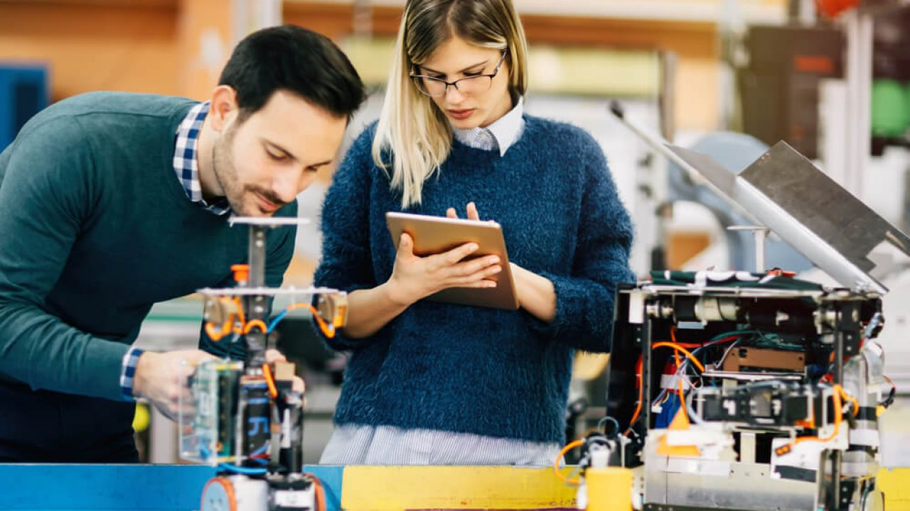
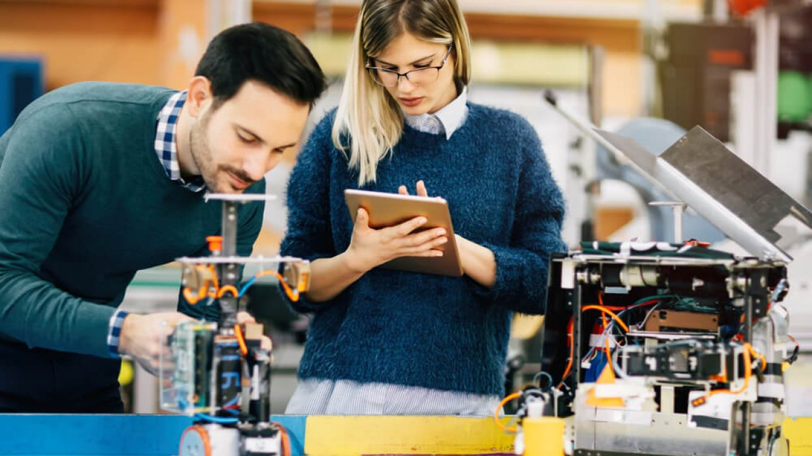

A robótica está presente em diversos setores e se manifesta de diversas formas conforme o tipo de robô utilizado:
Tipos de Robôs
-
Industriais: Esses robôs são amplamente utilizados em fábricas e linhas de produção, especialmente na indústria automobilística e eletrônica. Realizam tarefas repetitivas e de alta precisão, como soldagem, pintura, montagem de peças e embalagem. Sua principal vantagem está no aumento da produtividade e na redução de erros e riscos para os trabalhadores humanos.
Móveis: Capazes de se locomover de forma autônoma, esses robôs são aplicados em diversas áreas. Entre eles estão os drones, utilizados para mapeamento, vigilância e entrega de produtos, e os robôs aspiradores, que facilitam a limpeza doméstica. Sua mobilidade permite atuar em ambientes dinâmicos e de difícil acesso.
 Humanoides: Inspirados na forma e nos movimentos do corpo humano, os robôs humanoides são desenvolvidos para interagir com pessoas. Eles são usados em pesquisas, entretenimento, recepção de visitantes e até mesmo em terapias. Além disso, são essenciais no desenvolvimento de tecnologias de interação homem-máquina.
Humanoides: Inspirados na forma e nos movimentos do corpo humano, os robôs humanoides são desenvolvidos para interagir com pessoas. Eles são usados em pesquisas, entretenimento, recepção de visitantes e até mesmo em terapias. Além disso, são essenciais no desenvolvimento de tecnologias de interação homem-máquina.
 Educacionais: Muito utilizados em escolas e cursos técnicos, esses robôs ajudam no ensino de conceitos de programação, lógica, matemática e engenharia. Eles estimulam a criatividade e o pensamento crítico dos alunos, promovendo o aprendizado por meio de atividades práticas e interativas.

De serviço: Projetados para atuar em locais públicos como hospitais, shoppings e hotéis, esses robôs têm a função de interagir com pessoas, prestar informações, realizar entregas e auxiliar no atendimento ao cliente. Muitos já utilizam inteligência artificial para reconhecer rostos, compreender comandos de voz e responder de forma natural.
Educacionais: Muito utilizados em escolas e cursos técnicos, esses robôs ajudam no ensino de conceitos de programação, lógica, matemática e engenharia. Eles estimulam a criatividade e o pensamento crítico dos alunos, promovendo o aprendizado por meio de atividades práticas e interativas.

De serviço: Projetados para atuar em locais públicos como hospitais, shoppings e hotéis, esses robôs têm a função de interagir com pessoas, prestar informações, realizar entregas e auxiliar no atendimento ao cliente. Muitos já utilizam inteligência artificial para reconhecer rostos, compreender comandos de voz e responder de forma natural.